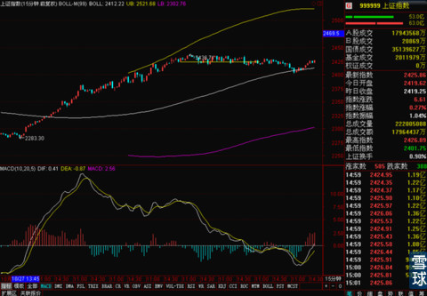

今天临时有事外出，就不多写了。主要想说，周一的预期是本周围绕2424盘整，如果本周周线站稳2424，后市会越来越美好。现在四个交易日过去了。今天在几乎全天低于2424的情况下，尾盘悄悄拉升。正好再次回到周线MA250上方。只差明天周五一天，只要周五红盘，这个期望就算完成了。
鉴于今天上证指数15分钟线的支撑效果和MACD走势，明天收红的概率还是不小的。

尤其今天有色和矿物制品有所表现，板块暂时还算有一定轮动，剩下就等周末看消息了，沪港通上线之前的消息空窗期快点结束吧，不然热点什么的，实在是不好把握。
 |
今天临时有事外出，就不多写了。主SaiLv 2014-11-06 15:39:30 |
Copyright © 1996-2014 SINA Corporation All Rights Reserved.